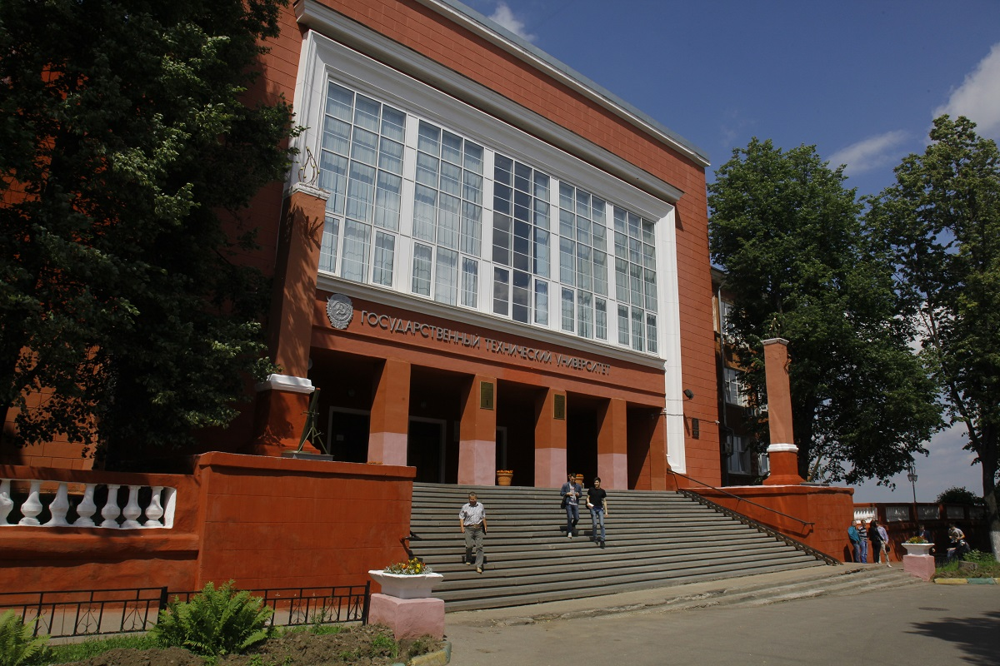

 Ассоциация выпускников Томского государственного университета была официально зарегистрирована как юридическое лицо 20 апреля 1994 года при ректоре Михаиле Константиновиче Свиридове. Первым президентом Ассоциации был избран Феликс Петрович Тарасенко. В этом же году, 23 декабря, прошло первое собрание выпускников, инициированное Ассоциацией. 29 июня 1995 года для новоявленных выпускников был организован первый «День выпускника».
С 1995 по 1997 год Ассоциация проводила акцию «Поддержи», направленную на помощь в реконструкции Главного корпуса университета. Были выпущены благотворительные билеты, все средства от продажи которых пошли на реставрацию. В рамках акции от Государственной Думы Томской области были разосланы обращения к Государственным Думам других областей с просьбой о поддержке и участии в ремонте корпуса. Многие предприятия из соседних регионов откликнулись на этот призыв, предоставив необходимые строительные материалы. Кроме того, 24 февраля 1996 года состоялся благотворительный концерт с участием Александра Городницкого и клуба «КОМУ» («Клуб Отдыха Молодых Ученых»), на котором также проходил сбор средств. В 1998 году, к 120-летию университета, Главный корпус был восстановлен.
За прошедшие 20 лет нормативно-правовой статус Ассоциации менялся несколько раз. Все попытки работать в статусе юридического лица быстро заканчивались из-за чрезмерной отчетности и отсутствия своей финансовой деятельности (все денежные потоки всегда шли прямо в университет). С 22 мая 2015 года Ассоциация выпускников ТГУ действует как общественная организация без образования юридического лица. Эта форма позволяет выполнять все поставленные перед организацией задачи, а финансовыми операциями занимается Эндаумент университета. Президентом Ассоциации выпускников избран Эдуард Владимирович Галажинский.
{kind=link}